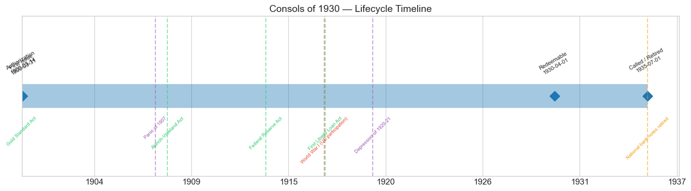
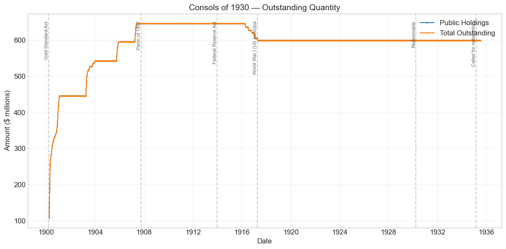
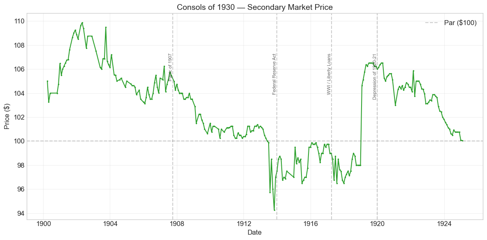
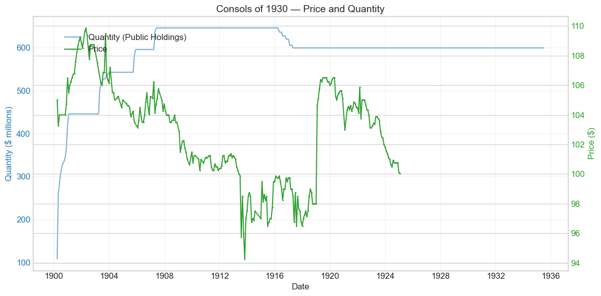
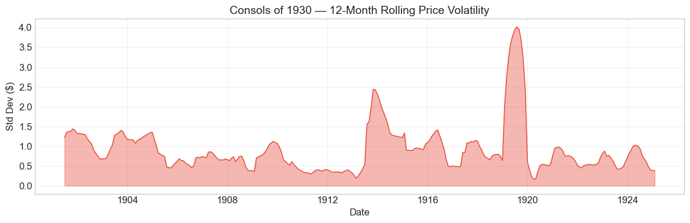

Bond Biography: Consols of 1930#
The Two Percent That Banks Were Made to Want#
An enhanced chapter from the Hall-Payne-Sargent US Federal Bond Database (2,857 issues, 1776–1960)
Bond ID (L1): 20131 | Category: Interest Bearing > Marketable > Long Term Bond
import pandas as pd
import numpy as np
import matplotlib.pyplot as plt
import matplotlib.patches as mpatches
import datetime
import warnings
warnings.filterwarnings('ignore')
plt.style.use('seaborn-v0_8-whitegrid')
plt.rcParams.update({'figure.figsize': (12, 6), 'font.size': 12,
'axes.titlesize': 14, 'axes.labelsize': 12})
# Load the bond database
store = pd.HDFStore('../data/BondDF.h5', mode='r')
BondList = store['BondList']
BondQuant = store['BondQuant']
BondPrice = store['BondPrice']
store.close()
BondQuant_T = BondQuant.transpose()
BondPrice_T = BondPrice.transpose()
bond_id = 20131
print(f'Loaded data for: Consols of 1930 (ID: 20131)')
/Users/thomassargent/anaconda3/lib/python3.9/site-packages/pandas/core/arrays/masked.py:60: UserWarning: Pandas requires version '1.3.6' or newer of 'bottleneck' (version '1.3.5' currently installed).
from pandas.core import (
Loaded data for: Consols of 1930 (ID: 20131)
The Settlement of the Money Question#
On March 14, 1900, President William McKinley signed the Gold Standard Act, and a political war that had convulsed American life for a generation came formally to an end. The election of 1896 — McKinley and gold against William Jennings Bryan and free silver — had settled the question at the ballot box; the Act of 1900 wrote the verdict into statute. The dollar was defined as 25.8 grains of gold nine-tenths fine; every form of United States money was to be maintained at parity with it; and, for the first time in the nation’s history, Congress authorized bonds whose principal and interest were promised explicitly in gold coin — not the ambiguous “coin” of the Refunding Act of 1870, which had left a generation of bondholders guessing whether they might one day be paid in depreciated silver.
The bond created to carry that promise was the Two Per Cent Consols of 1930 — Bond ID 20131 in our database. The name was borrowed self-consciously from the British “consols,” the consolidated perpetual annuities that anchored the London market: the American version was not perpetual, but its thirty-year horizon (redeemable at the government’s pleasure after April 1, 1930, hence “of 1930”) made it the longest and, at 2 percent, the cheapest loan the United States had ever floated. Section 11 of the Act invited holders of three outstanding issues — the 5s of 1904, the 4s of 1907, and the 3s of 1908 — to exchange them for the new consols. The architect of the operation was Secretary of the Treasury Lyman J. Gage, the Chicago banker who had pressed for gold-standard legislation since 1897 and who now managed the largest voluntary conversion of the federal debt since the great refunding of the 1870s.
What makes this bond’s story distinctive in the arc of American fiscal history is not drama but artifice. A 2 percent thirty-year bond, in a world where good railroad bonds yielded 3½ to 4 percent, should have sold near 70, not 100. Yet the consols were issued at par, traded above par for years, and stayed within a few dollars of par for a third of a century. The reason lay not in time preference or federal credit alone but in a regulatory subsidy: the same Act that created the consols cut the tax on national bank note circulation secured by 2 percent bonds to one-half of one percent, making these bonds the uniquely preferred collateral for the nation’s bank-issued currency. The price history traced below is therefore something rare in the database — the biography of a bond whose price was made chiefly by regulation, and which died only when the regulatory regime that sustained it was itself dismantled.
Historical Context: From Gold Standard to Federal Reserve#
The following major events framed this bond’s lifetime:
Date |
Event |
Category |
|---|---|---|
1900-03-14 |
Gold Standard Act |
Legislation |
1907-10 to 1908-02 |
Panic of 1907 |
Crisis |
1908-05-30 |
Aldrich–Vreeland Act; National Monetary Commission |
Legislation |
1913-12-23 |
Federal Reserve Act |
Legislation |
1917-04-06 to 1918-11-11 |
World War I (US participation) |
War |
1917-04-24 |
First Liberty Loan Act |
Legislation |
1920-01 to 1921-07 |
Depression of 1920–21 |
Crisis |
1930-04-01 |
Bond becomes redeemable (“of 1930”) |
Fiscal |
1935 |
Consols and Panama 2s called; national bank notes retired |
Fiscal/Monetary |
The conversion bargain of 1900#
Why would a rational holder of a 5 percent or 4 percent government bond voluntarily accept 2 percent? The answer was arithmetic plus privilege. The old bonds stood at substantial premiums — the 4s of 1907 near 114, the 5s of 1904 higher still — and the Gold Standard Act directed the Treasury to receive them at a valuation reflecting those premiums, so that a converting holder surrendered no market value. For an ordinary investor the exchange was roughly a wash; for a national bank it was a bargain. Under the National Banking Acts a bank issuing circulating notes had to deposit U.S. bonds with the Treasurer as security, and the Act of 1900 stacked every incentive toward the new 2s: the tax on circulation secured by them was halved (½ percent, against 1 percent on other bonds), notes could be issued to the full par value of the deposited bonds, and the minimum capital for country banks was lowered to $25,000, multiplying the number of potential note-issuers. Conversion was brisk: roughly $420 million of consols existed within months of passage, and continued exchanges — visible as steps in the quantity chart below — carried the loan to its $646 million peak by mid-1907, making it far the largest issue on the government’s books. The front half of this story, told from the perspective of the retiring bonds, appears in this database’s chapter on the Four Percent Loan of 1907.
The circulation privilege as a pricing machine#
The consols’ price makes sense only through a bank’s ledger. A bank buying 2s at, say, 104 could deposit them, receive nearly their face value in its own circulating notes, and lend those notes at market rates, paying only the ½ percent tax and the opportunity cost of the small premium. So long as note issue was profitable, banks would bid for the bonds until the marginal profit of circulation was competed away — which meant bidding a 2 percent bond to par and beyond. The quoted “yield” on the consols — around 1.9 percent at issue, and at times lower — was therefore not the riskless long-term interest rate of the United States; it was the residual left after the capitalized value of a note-issuing franchise had been priced in. Contemporary observers understood this perfectly well, and modern users of these data must too: for most of its life this bond’s price measures the demand for national bank notes at least as much as it measures the government’s credit. The Payne–Szőke–Hall–Sargent database flags exactly this problem in constructing yield curves for the early twentieth century.
The Panic of 1907 and the indictment of bond-secured currency#
The Panic of October 1907 struck a monetary system whose currency could not stretch. National bank notes were backed by government bonds, and the supply of eligible bonds was fixed by the state of the federal budget, not by the needs of trade; when depositors demanded cash, banks could not quickly expand their note issue, and the country resorted to clearing-house certificates and outright suspension. The consols themselves barely moved — their holders were the very banks that needed them for circulation, and quoted prices in 1907–08 stayed in the 103–106 range — but the panic indicted the whole arrangement of which they were the centerpiece. Congress responded with the Aldrich–Vreeland Act (May 1908), authorizing emergency currency against broader collateral and creating the National Monetary Commission whose studies led, five years later, to the Federal Reserve Act. In the meantime the Treasury added siblings to the family: the Panama Canal 2s of 1906 and 1908, small gold loans carrying the same coupon and the same circulation privilege, priced by the market on precisely the same logic.
The Federal Reserve Act and planned obsolescence#
The Federal Reserve Act of December 23, 1913 created an elastic currency — Federal Reserve notes secured by commercial paper and gold — and thereby abolished the rationale of the bond-secured national bank note. The Act treated the 2 percent bonds with deliberate care, for a sudden end to the circulation privilege would have crushed their price and inflicted losses on thousands of banks. Section 18 provided a gradual exit: after two years, Federal Reserve Banks could be required to purchase limited annual amounts of 2s from member banks, converting them into 3 percent bonds without the circulation privilege and one-year Treasury notes. The market saw the threat before it saw the safeguard — the consols sagged to their all-time low, about 94¼ in October 1913, as the legislation moved through Congress — and the modest conversions actually carried out under Section 18 in 1916–17 appear in the quantity series as the only reductions the loan ever suffered, roughly $46 million in all. War then suspended the winding-down: after 1917 the Treasury had weightier things to refinance, and the 2s settled into a long twilight, still outstanding, still securing notes, increasingly a relic.
War, the passing of 1930, and the end in 1935#
American entry into World War I in April 1917 remade the federal debt around the Liberty Loans — billions of 3½ to 4¼ percent bonds that dwarfed the entire pre-war debt and made a 2 percent consol invisible as an investment. Yet the consols did not fall with the Liberties in the postwar bear market; they rose, jumping above 106 in early 1919, precisely because their price was a franchise price: high market interest rates made note circulation more profitable, and bank demand for the eligible bonds tightened accordingly. April 1, 1930 — the redemption date embedded in the bond’s name — came and went without a call: with the circulation privilege still in use and no cheaper refinancing worth the disruption, the Treasury simply left the loan outstanding. The end came instead as a by-product of the New Deal’s monetary reconstruction. In March 1935 the Treasury, drawing on the profit from the 1934 devaluation of the gold dollar, called the 2 percent Consols and the Panama Canal 2s for redemption; with the last eligible bonds retired, the national bank note — the bond-secured currency of 1863 — passed out of issue, and the consols’ thirty-five-year story closed in the summer of 1935, exactly where our quantity series ends.
# Bond Lifecycle Timeline
fig, ax = plt.subplots(figsize=(14, 4))
# Key dates
dates = [('Authorization', '1900-03-14'), ('First Issue', '1900-03-31'),
('Redeemable', '1930-04-01'), ('Called / Retired', '1935-07-01')]
events = [('Gold Standard Act', '1900-03-14', 'legislation'), ('Panic of 1907', '1907-10-01', 'crisis'), ('Aldrich-Vreeland Act', '1908-05-30', 'legislation'), ('Federal Reserve Act', '1913-12-23', 'legislation'), ('World War I (US participation)', '1917-04-06', 'war'), ('First Liberty Loan Act', '1917-04-24', 'legislation'), ('Depression of 1920-21', '1920-01-01', 'crisis'), ('National bank notes retired', '1935-07-01', 'monetary')]
import matplotlib.dates as mdates
from datetime import datetime
# Plot bond lifetime bar
d0 = datetime.strptime(dates[0][1], '%Y-%m-%d')
d1 = datetime.strptime(dates[-1][1], '%Y-%m-%d')
ax.barh(0, (d1 - d0).days, left=mdates.date2num(d0), height=0.3,
color='#1f77b4', alpha=0.4, label='Bond Lifetime')
# Mark key dates
for label, date_str in dates:
d = datetime.strptime(date_str, '%Y-%m-%d')
ax.plot(mdates.date2num(d), 0, 'D', color='#1f77b4', markersize=10)
ax.annotate(f'{label}\n{date_str}', (mdates.date2num(d), 0.25),
ha='center', va='bottom', fontsize=8, rotation=30)
# Mark historical events
colors = {'war': '#e74c3c', 'crisis': '#9b59b6', 'legislation': '#2ecc71', 'other': '#95a5a6', 'monetary': '#f39c12'}
for name, date_str, cat in events:
d = datetime.strptime(date_str, '%Y-%m-%d')
ax.axvline(mdates.date2num(d), color=colors.get(cat, 'gray'), alpha=0.5, linestyle='--')
ax.annotate(name, (mdates.date2num(d), -0.25), ha='center', va='top',
fontsize=7, rotation=45, color=colors.get(cat, 'gray'))
ax.set_yticks([])
ax.xaxis.set_major_formatter(mdates.DateFormatter('%Y'))
ax.set_title('Consols of 1930 — Lifecycle Timeline')
ax.set_ylim(-1, 1)
plt.tight_layout()
plt.show()

Bond Features#
Feature |
Detail |
|---|---|
Name |
Consols of 1930 (Two Per Cent Consols) |
Authorizing Act |
Gold Standard Act, March 14, 1900 (Section 11) |
First Issue Date |
March 31, 1900 |
Term |
30 years; redeemable at the pleasure of the United States after April 1, 1930 |
Coupon Rate |
2.0% |
Payment Frequency |
Quarterly (4 times/year) |
Payable In |
Gold coin of the standard value fixed by the Act — the first U.S. bonds so denominated explicitly |
How Acquired |
By conversion of the 5s of 1904, 4s of 1907, and 3s of 1908, at premium-compensating valuations |
Peak Outstanding |
~$646 million (mid-1907) — the largest issue on the government’s books before WWI |
Special Privilege |
Security for national bank note circulation, taxed at only ½% per annum |
Final Disposition |
Called and redeemed in 1935; national bank notes retired |
# Display full bond features from database
row = BondList.loc[20131]
display_cols = [
"Treasury's Name Of Issue", 'Authorizing Act', 'Term Of Loan',
'First Issue Date', 'First Redemption Date', 'Final Redemption Date',
'Coupon Rate', 'Coupons Per Year', 'Callable', 'Coin',
'Authorized Amount', 'Price Sold'
]
print('Bond Features from Database:')
print('=' * 55)
for col in display_cols:
if col in row.index:
print(f' {col:<30} {row[col]}')
Bond Features from Database:
=======================================================
Treasury's Name Of Issue Consols of 1930
Authorizing Act March 14, 1900
Term Of Loan 30 years
First Issue Date 1900-03-31 00:00:00
First Redemption Date NaT
Final Redemption Date NaT
Coupon Rate 2.0
Coupons Per Year 4.0
Callable 0.0
Coin 1.0
Authorized Amount nan
Price Sold 1.0
Bond Quantity Over Time#
The bond’s outstanding quantity peaked at $646.25 million on June 30, 1907. Data span March 1900 to June 1935 (424 monthly observations) — a full decade longer than the price series, because the consols remained quietly on the government’s books, immobilized as note collateral, long after active secondary-market quotation had ceased.
# Bond quantity over time
fig, ax = plt.subplots(figsize=(12, 6))
for stype in ['Public Holdings', 'Total Outstanding']:
try:
s = BondQuant_T.loc[(20131, stype)]
s = s[s.notna()]
if len(s) > 0:
ax.plot(s.index, s.values / 1e6, marker='.', markersize=3, linewidth=1.5, label=stype)
except KeyError:
pass
ax.set_title('Consols of 1930 — Outstanding Quantity')
ax.set_xlabel('Date')
ax.set_ylabel('Amount ($ millions)')
ax.legend()
ax.grid(True, alpha=0.3)
events = {'1900-03-14': 'Gold Standard Act', '1907-10-01': 'Panic of 1907', '1913-12-23': 'Federal Reserve Act', '1917-04-06': 'World War I (US participa', '1930-04-01': 'Redeemable', '1935-03-01': 'Called for redemption'}
for date_str, label in events.items():
d = pd.Timestamp(date_str)
ax.axvline(d, color='gray', alpha=0.4, linestyle='--')
ax.text(d, ax.get_ylim()[1]*0.97, label, rotation=90, va='top', ha='right', fontsize=8, alpha=0.7)
plt.tight_layout()
plt.show()

Quantity Analysis: A Staircase Up, a Plateau, and Silence#
The quantity series has an unusual shape for a marketable loan: an ascending staircase, a long dip-free plateau, and then twenty years of perfect flatness.
The staircase, 1900–1907. Every step upward is a conversion, not a cash sale. The loan opened at roughly $420 million in the spring of 1900 as the first great wave of 5s, 4s, and 3s came in for exchange under Section 11 of the Gold Standard Act — the auto-detected +139.8 percent jump in April 1900 is that opening wave hitting a small initial base. Further exchange windows produced the visible steps to about $446 million (1901), $543 million (1903), $596 million (1905), and finally $646 million by mid-1907, as the Treasury swept in most of what remained of the refunding-era debt. Each dollar of consols issued extinguished a dollar of 3, 4, or 5 percent obligations; the annual interest saving to the Treasury ran into the millions, which was precisely the fiscal argument Secretary Gage had made for the operation.
The plateau and the only decline, 1907–1917. From 1907 the loan sat essentially unchanged — its holders were national banks whose bonds were locked in the Treasurer’s vaults as note security, and who had no reason and little ability to sell. The single reduction in the loan’s entire history is the roughly $46 million step-down of 1916–17, from $646 million to about $600 million: the operation of Section 18 of the Federal Reserve Act, under which Federal Reserve Banks acquired 2s from member banks and converted them into 3 percent conversion bonds (without the circulation privilege) and one-year Treasury notes. The provision was designed to retire the whole loan over about twenty years; American entry into the war suspended the program after these first installments, and it was never resumed.
The silence, 1917–1935. For eighteen years the series is a flat line at $599.7 million — through the Liberty Loans, the 1920–21 depression, the passing of the April 1930 redemption date, and the banking collapse of 1931–33. Nothing better illustrates the bond’s peculiar status: it was no longer really a market instrument at all, but the frozen collateral base of the national bank note circulation. The series ends in June 1935 with the loan still formally outstanding, weeks before the redemption that followed the Treasury’s 1935 call finally cleared it from the books.
Secondary Market Prices#
Overall Statistics (1900-03-31 to 1925-01-31): Mean $102.52, Range $94.27–$109.87, Std Dev $3.31, 262 observations.
By Period:
Period |
Mean |
Std |
Min |
Max |
Obs |
|---|---|---|---|---|---|
Issue to end of quotations (1900-03 to 1925-01) |
$102.52 |
$3.31 |
$94.27 |
$109.87 |
262 |
Three things should strike the reader before looking at the chart. First, the numbers are astonishing on their face: a 2 percent thirty-year bond averaging $102.52 implies a yield below 2 percent across a quarter century in which prime corporate bonds yielded roughly twice that and Liberty bonds carried 3½ to 4¼ percent. Second, the range is remarkably narrow — barely fifteen dollars between the all-time high (just under $110, in 1902) and the all-time low (about $94¼, in October 1913). Third, and consequently, this price path should not be read as a market interest rate. It is best read as the fluctuating capitalized value of the national bank circulation privilege, superimposed on par: when the note-issuing franchise was secure and profitable, the 2s stood at a premium; when the franchise was threatened — above all during the Federal Reserve legislation of 1913 — they slipped below par; and as the franchise’s eventual extinction became a matter of timing rather than doubt, the price converged quietly back to $100, where the series ends in January 1925. The bond’s low, administratively-propped, almost eventless price path is the story.
# Annotated price chart
fig, ax = plt.subplots(figsize=(12, 6))
s = BondPrice_T.loc[(20131, 'Average')]
s = pd.to_numeric(s, errors='coerce').dropna()
if len(s) > 0:
ax.plot(s.index, s.values, marker='.', markersize=3, linewidth=1.5, color='#2ca02c')
ax.axhline(100, color='black', alpha=0.2, linestyle='--', label='Par ($100)')
ax.set_title('Consols of 1930 — Secondary Market Price')
ax.set_xlabel('Date')
ax.set_ylabel('Price ($)')
ax.legend()
ax.grid(True, alpha=0.3)
events = {'1907-10-01': 'Panic of 1907', '1913-12-23': 'Federal Reserve Act', '1917-04-06': 'WWI / Liberty Loans', '1920-01-01': 'Depression of 1920-21'}
for date_str, label in events.items():
d = pd.Timestamp(date_str)
ax.axvline(d, color='gray', alpha=0.4, linestyle='--')
ax.text(d, ax.get_ylim()[1]*0.97, label, rotation=90, va='top', ha='right', fontsize=8, alpha=0.7)
plt.tight_layout()
plt.show()

# Price and Quantity — dual-axis chart
fig, ax1 = plt.subplots(figsize=(12, 6))
# Quantity (left axis)
for stype in ['Public Holdings', 'Total Outstanding']:
try:
q = BondQuant_T.loc[(20131, stype)]
q = q[q.notna()]
if len(q) > 0:
ax1.plot(q.index, q.values / 1e6, color='#1f77b4', alpha=0.6, label=f'Quantity ({stype})')
break
except KeyError:
pass
ax1.set_xlabel('Date')
ax1.set_ylabel('Quantity ($ millions)', color='#1f77b4')
ax1.tick_params(axis='y', labelcolor='#1f77b4')
# Price (right axis)
ax2 = ax1.twinx()
p = BondPrice_T.loc[(20131, 'Average')]
p = pd.to_numeric(p, errors='coerce').dropna()
if len(p) > 0:
ax2.plot(p.index, p.values, color='#2ca02c', marker='.', markersize=2, label='Price')
ax2.set_ylabel('Price ($)', color='#2ca02c')
ax2.tick_params(axis='y', labelcolor='#2ca02c')
ax1.set_title('Consols of 1930 — Price and Quantity')
ax1.grid(True, alpha=0.3)
fig.legend(loc='upper left', bbox_to_anchor=(0.1, 0.9))
plt.tight_layout()
plt.show()

Detected Price/Quantity Events, Explained#
Only two movements in a third of a century were large enough to trip the database’s event detector — itself a telling fact about this bond:
Date |
Type |
Change |
Explanation |
|---|---|---|---|
1900-04 |
Quantity increase |
+139.8% |
The opening conversion wave under Section 11 of the Gold Standard Act. Holders of the 5s of 1904, 4s of 1907, and 3s of 1908 — national banks above all — exchanged into the new gold consols in the loan’s first weeks, on a small initial base. |
1919-01 |
Price spike |
+6.8% |
The consols jump from the high 90s to above $106 as the war ends. The move looks perverse for a 2 percent bond in a rising-rate environment — Liberty bonds were sinking below par at the time — but it is exactly what circulation-privilege pricing predicts: with market rates high, the profit on issuing national bank notes was unusually fat, and banks bid up the scarce stock of eligible 2s. The spike is the franchise being repriced, not the government’s credit. |
Between these two bookends the detector finds nothing — no panic collapse in 1907, no wartime rout, no postwar whipsaw. The quieter movements the detector ignores are nonetheless legible. The gentle premium decay from the 1902 peak near $110 tracks the fading prospect that the loan would remain scarce (the Panama Canal 2s added eligible supply from 1906) and, later, the approach of political change. The one sustained trip below par — bottoming at $94.27 in October 1913 — coincides precisely with the congressional endgame of the Federal Reserve Act, when it briefly seemed the circulation privilege might be extinguished without compensation; the recovery through 1914–16 followed the reassurance of Section 18’s gradual conversion machinery. The drift back to exactly $100.05 in the final observation of January 1925 is a bond settling onto its redemption value, its franchise premium amortizing away as the 1930 date approached.
Price Volatility#
Maximum drawdown: −14.2% (from the peak of $109.87 on April 30, 1902 to the trough of $94.27 on October 31, 1913)
Average monthly return: −0.014%
By the standards of this database these are placid numbers — compare the −27.9 percent wartime collapse of the Louisiana Sixes or the −22.1 percent premium amortization of the 4s of 1907 — and even the 14 percent “drawdown” took eleven and a half years to unfold. The rolling-volatility chart below shows a security that was, most of the time, nearly inert: month-to-month changes of a fraction of a dollar, befitting a bond whose marginal holder was a regulated bank rather than a speculator. The visible flares are few and interpretable — the repricing around the Federal Reserve legislation of 1913, and the sharp postwar franchise repricing of 1919 — while the Panic of 1907, which convulsed every other market in New York, barely registers here at all. When a bond’s price is administratively propped, its volatility measures the stability of the regulation, not of the market.
# Rolling volatility (12-month window)
p = BondPrice_T.loc[(20131, 'Average')]
p = pd.to_numeric(p, errors='coerce').dropna()
if len(p) >= 12:
rolling_std = p.rolling(window=12).std().dropna()
fig, ax = plt.subplots(figsize=(12, 4))
ax.fill_between(rolling_std.index, rolling_std.values, alpha=0.4, color='#e74c3c')
ax.plot(rolling_std.index, rolling_std.values, color='#e74c3c', linewidth=1)
ax.set_title('Consols of 1930 — 12-Month Rolling Price Volatility')
ax.set_xlabel('Date')
ax.set_ylabel('Std Dev ($)')
ax.grid(True, alpha=0.3)
plt.tight_layout()
plt.show()
else:
print('Insufficient data for rolling volatility (need >= 12 observations)')

Issuance, Distribution, and Redemption#
Not sold, but swapped. Unlike nearly every other large loan in this database, the consols raised no new money. They came into existence through the exchange window of Section 11 of the Gold Standard Act: holders of the refunding-era 5s of 1904, 4s of 1907, and 3s of 1908 presented their bonds to the Treasury and received consols at valuations that compensated them for the surrendered premiums, the Treasury booking the difference against its future interest savings. The bonds were issued in both coupon and registered form in the customary range of denominations, but the retail investor was never the intended audience.
Who held them. The overwhelming holders were the national banks, and most of the loan spent its life physically deposited with the Treasurer of the United States as security for circulating notes. This concentration explains every unusual feature of the series: the staircase issuance (banks converting as circulation needs grew), the frozen plateau (deposited bonds could not be sold without retiring notes), the narrow price range (the marginal buyer and marginal seller were both banks doing franchise arithmetic), and the early end of regular price quotation in the mid-1920s, when the float available for trading had dwindled to insignificance.
The long deferral. The Federal Reserve Act’s Section 18 sketched an orderly retirement — Federal Reserve Banks absorbing up to $25 million of 2s a year and converting them into 3 percent obligations — and its first operations produced the $46 million reduction of 1916–17. The war halted the program, and the 1920s Treasury, preoccupied with digesting the Liberty debt, let the 2s lie. The April 1, 1930 redemption date passed without action; a bond that cost the Treasury only 2 percent, and that the banks still wanted, was in no one’s interest to disturb.
The end, 1935. The Banking Act era finally supplied both the means and the motive. The devaluation of the gold dollar in January 1934 handed the Treasury a multi-billion-dollar book profit on its gold; the national bank note had become a redundant anachronism alongside Federal Reserve currency; and in the spring of 1935 the Treasury announced the call of the 2 percent Consols of 1930 and the Panama Canal 2s. The bonds were paid off at par in mid-1935 — the gold-coin clause by then abrogated, like all such clauses, by the Joint Resolution of June 1933 — and as the deposited bonds came out of the Treasurer’s vaults the national bank notes they secured were retired from circulation. A currency system born in the Civil War and a bond born in the gold-standard settlement of 1900 thus expired together, in an operation so quiet that it is remembered, when it is remembered at all, as a footnote to the New Deal’s monetary reforms.
Implications and Legacy#
The first explicit gold bond — and the irony of its end. The consols’ most celebrated feature in 1900 was the phrase “payable in gold coin of the present standard value.” After three decades in which the vague “coin” clause of 1870 had let the silver movement menace every bondholder, Congress finally wrote the promise the market had always priced. The irony is complete: the explicit gold clause never mattered. The silver threat was already dead by 1900, and when the clause was finally tested — by the 1933 abrogation of gold clauses and the 1934 devaluation — it was swept away with all the others. The bond that was supposed to embody the permanence of the gold dollar was redeemed, in 1935, in a dollar containing 41 percent less gold than the one promised.
A laboratory of regulatory pricing. For students of the database, the consols are the purest specimen of a recurring theme: a government bond’s price need not be a statement about government credit. Here the wedge between quoted yield and market interest rates — often 150 basis points or more — is almost entirely the capitalized circulation franchise. Any yield curve for 1900–1917 built naively on the 2s would show the United States borrowing thirty-year money below 2 percent while its railroads paid 4; the correct reading is that the Treasury had, in effect, sold two products stapled together — a bond and a bank-note license — and the market priced the bundle. Payne, Szőke, Hall & Sargent (2025) confront exactly this problem in estimating the government’s true cost of borrowing under the gold standard.
The debt management lesson. The conversion of 1900 was, on its own terms, a triumph: the Treasury refinanced over $600 million of 3–5 percent debt at 2 percent, a coupon no other sovereign on earth could command, and did it voluntarily, by making the new bonds privately valuable to a captive constituency. But the cheapness was bought by hard-wiring the currency supply to the stock of federal debt — a design whose inelasticity the Panic of 1907 exposed brutally. The nation’s money could not expand in a crisis because the government was too solvent: eligible bonds were scarce precisely because the debt was small and shrinking. The Aldrich–Vreeland emergency currency, the National Monetary Commission, and ultimately the Federal Reserve System were the institutional price of the cheap financing the 2s represented.
A bond outlived by its own database entry. The consols’ price series ends in January 1925; its quantity series runs to June 1935. That ten-year gap — a bond outstanding, fully serviced, yet effectively without a market — is itself historical evidence. The 2s had ceased to be an investment and become a piece of monetary plumbing, and when the plumbing was replaced the bond simply went with it. No default, no drama: of the $599.7 million on the books in 1935, every dollar was paid. The deeper legacy is architectural. The Liberty Loans of 1917–18 — massive, widely held, priced on investment merits, backed by nothing but taxes — announced the modern regime in which the Treasury borrows in an open market and the central bank, not bond-secured private notes, supplies the currency. The Consols of 1930 were the last and most refined instrument of the older world, in which debt and money were bolted together — and their quiet extinction in 1935 marks, as well as any single date can, where that world ended.
References#
Primary Sources#
An Act to define and fix the standard of value, to maintain the parity of all forms of money issued or coined by the United States, to refund the public debt, and for other purposes (Gold Standard Act), March 14, 1900, especially Sections 11–13 (refunding into 2 percent consols; national bank provisions).
Federal Reserve Act, December 23, 1913, especially Section 18 (refunding of the 2 percent bonds).
Joint Resolution of June 5, 1933 (abrogation of gold clauses) and Gold Reserve Act of January 30, 1934.
Annual Reports of the Secretary of the Treasury, 1900–1935, especially the reports of Lyman J. Gage (1900–1901) on the refunding operations and of Henry Morgenthau, Jr. (1935) on the retirement of the 2 percent bonds and national bank notes.
Annual Reports of the Comptroller of the Currency, 1900–1935 (bonds on deposit as security for circulation; profit on national bank circulation).
Scholarly Works#
Bayley, R. A. (1881). The National Loans of the United States, From July 4, 1776 to June 30, 1880. Washington: Government Printing Office.
Friedman, M. & Schwartz, A. J. (1963). A Monetary History of the United States, 1867–1960. Princeton: Princeton University Press. (Chs. 4–8 on the gold standard settlement, 1907, the Federal Reserve, and the 1930s.)
Noyes, A. D. (1909). Forty Years of American Finance. New York: G. P. Putnam’s Sons.
Timberlake, R. H. (1993). Monetary Policy in the United States: An Intellectual and Institutional History. Chicago: University of Chicago Press. (On the bond-secured currency and its inelasticity.)
Homer, S. & Sylla, R. (2005). A History of Interest Rates, 4th ed. Hoboken: Wiley. (On the anomalously low quoted yields of the circulation-privilege 2s.)
Payne, J., Szoke, B., Hall, G. & Sargent, T. (2025). “Costs of Financing US Federal Debt Under a Gold Standard: 1791–1933.” Quarterly Journal of Economics.
General Histories#
Dewey, D. R. (1918). Financial History of the United States. New York: Longmans, Green and Co.
Studenski, P. & Krooss, H. E. (1952). Financial History of the United States. New York: McGraw-Hill.
See also, in this database, the companion chapter on the Four Percent Loan of 1907 (Bond ID 20121), which tells the story of the refunding-era debt that the Consols of 1930 replaced.
Enhanced Bond Biography generated from the Hall-Payne-Sargent Bond Database. Narrative enrichment draws principally on the Gold Standard Act and Federal Reserve Act texts, the Annual Reports of the Secretary of the Treasury and the Comptroller of the Currency, Noyes (1909), Friedman & Schwartz (1963), and Timberlake (1993).